| 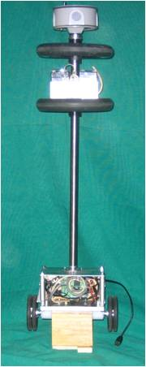 | The only problem with posting one of my projects is that I haven't really finished any. Obviously caused by not defining what to end up with. Until now I just wanted to play with an aspect of something and built what I needed to get to that point. Got about 6 unfinished projects, so my member blog is going to start with the latest one and maybe work backward from there when it is completed. | 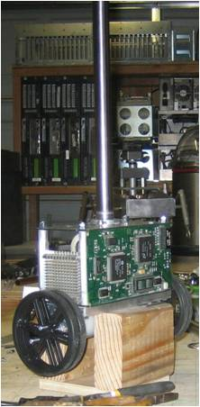 |
I also wanted the minimum goals to take at least a few months to finish. | ||
| This is where we are now. | |
| Minimum end goal: | |
| Create a self-balancing platform that performs behaviors which, when combined, appear to display a simple definition of a 'life' and also allow it to exist in its environment without direct assistance. | |
| High level project phases/goals: | |
1) self-balance - stays in one location when bumped/disturbed 2) remote control - by android - by pc (just to do it and get wireless link going to monitor status) 3) autonomous control with obstacle avoidance - roam with no purpose (instinctive senses) 4) add basic senses (light, sound, distance traveled, human presence, etc) 5) add basic status/response displays - visual/audio (leds for pwr/etc, ?lcd, ?tft) 6) add basic behaviors (light seek/avoid, sound seek/avoid, wall-following, alert, etc) 7) add self-charging circuits, hardware, and code to provide means of unassisted existence 8) add self-charging behavior and explore combinations of all behaviors (subsumption/etc) 9) add intra/internet status/response so it can be monitored without physical access 10) define a 'life', find an environment, and see how long it can 'live' there | |
| Previous work up to now: | |
| |
| Parts Listing (so far) |
| |||||||||||||||||||||||||||||||||||||||||
Notes: · emergency cutoff, fusing, things that should be there that I skipped so far... · Complementary or Kalman ? | |||||||||||||||||||||||||||||||||||||||||
Other random ramblings: Why a self-balancing bot? One reason is that it will certainly look 'dead' if it fails to meet its own basic needs. ie. "'I've fallen and I can't get up!!!"
Mercurial Stick... what? At the start I figure this thing will be more like the 1st definition of mercurial shown below and hopefully act more like the 2nd definition when completed. mer•cu•ri•al (mərˈkyʊər i əl) 1. changeable; fickle; flighty; erratic: a mercurial nature. 2. animated; lively; sprightly.
So really, Can a bot survive on its own, performing 'meaningful' tasks that satisfy an arbitrarily determined 'life-purpose'? It wouldn't have to compete for survival... yet. If it did have to compete in the future, would it be able to develop and retain a strategy to obtain a very limited resource? What if it experienced a 'freak' mutant code, sensor, or hardware upgrade giving it advantage over the competition? How does the 'normal' competitor deal with the new situation? Is it too soon to even dare ask these questions?
| |||||||||||||||||||||||||||||||||||||||||
Pictures of earlier construction: | |||||||||||||||||||||||||||||||||||||||||
| 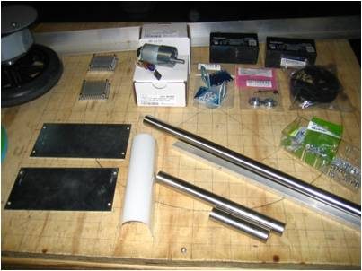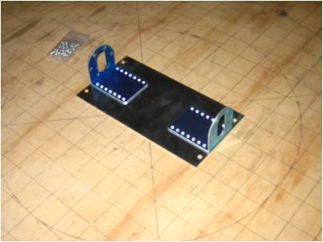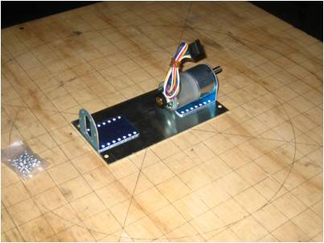 | |||||||||||||||||||||||||||||||||||||||||
| 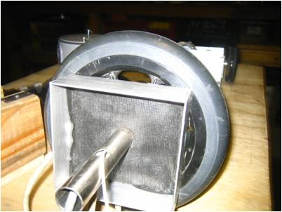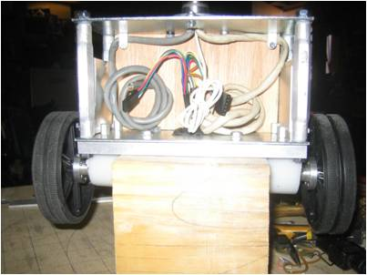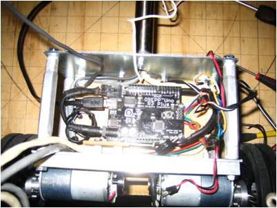 | |||||||||||||||||||||||||||||||||||||||||
| 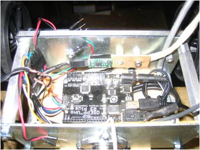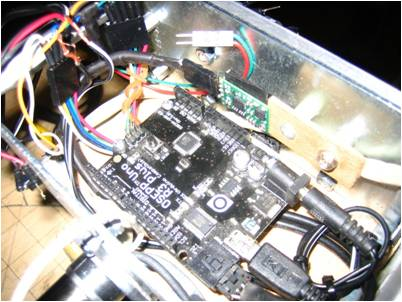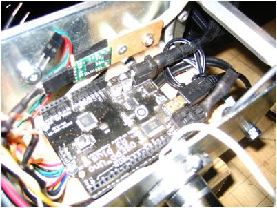 | |||||||||||||||||||||||||||||||||||||||||
| 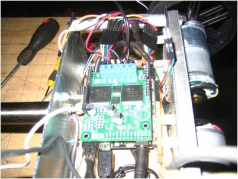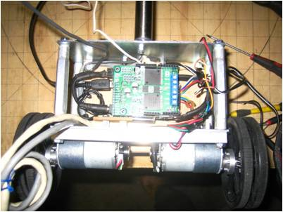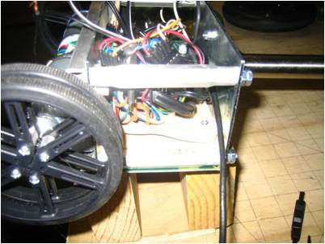 | |||||||||||||||||||||||||||||||||||||||||
| 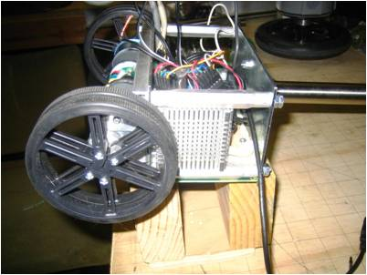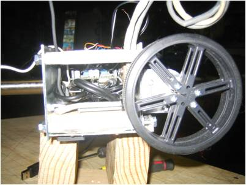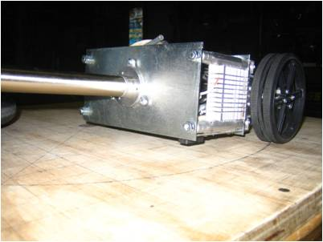 | |||||||||||||||||||||||||||||||||||||||||
| 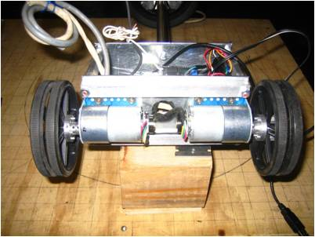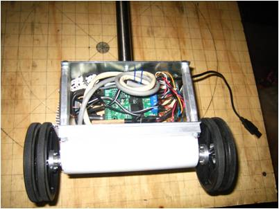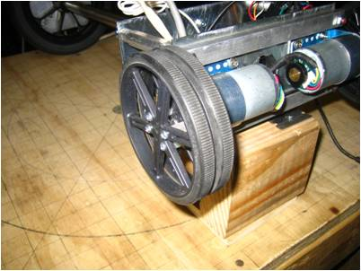 | |||||||||||||||||||||||||||||||||||||||||
| 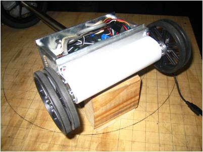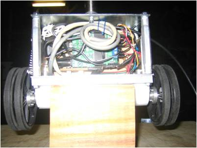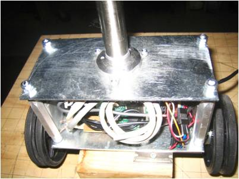 | |||||||||||||||||||||||||||||||||||||||||
| 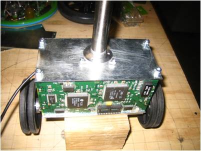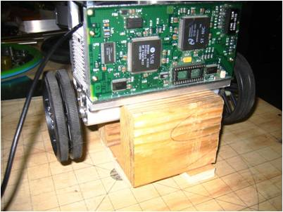 | |||||||||||||||||||||||||||||||||||||||||
| Pictures of various components (from web): | |||||||||||||||||||||||||||||||||||||||||
| Arduino Uno R3 | |
| 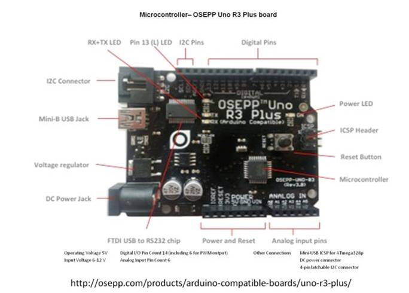 | |
| Pololu Dual VNH5019 Motor Driver Shield for Arduino | |
| 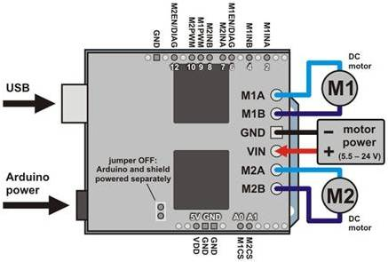 | |
| 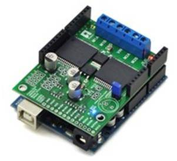 | |
| MinIMU-9 Gyro, Accelerometer, and Compass | |
| 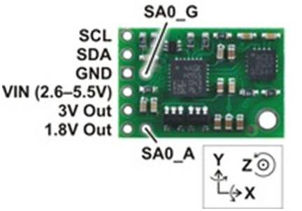 | |
Until next time... create! |
- Tom Stewart's blog
- Log in or register to post comments